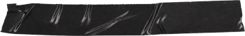
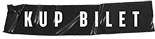

21 - 23.07 2021
Wisienką na torcie, kropką nad i, metą letniego ogólnopolskiego muzycznego maratonu jest Festiwal Letnie Brzmienia, który odbędzie się w dniach 27-28 sierpnia 2021 na Błoniach PGE Stadionu Narodowego w Warszawie. Ten miejski finał to zwieńczenie całego cyklu Letnie Brzmienia, który gościł przez wakacje w największych miastach w Polsce.
Zmęczeni trwającą pandemią i złaknieni festiwalowych emocji, wychodzimy z propozycją szytego na miarę dzisiejszych czasów, z zachowaniem wszelkich zasad bezpieczeństwa, festiwalu, który, mamy nadzieję, zagości na dłużej w kalendarium miejskiego lata stolicy.
2 sceny oraz najpopularniejsi polscy artyści - to trzon Festiwalu Letnie Brzmienia. Przez dwa dni fani będą mogli usłyszeć m.in. powracającą z nowym materiałem Brodkę, promującego świeżo wydany album “Zabawa” (z przebojami “Annuszka” i “Tylko nocą”) Krzysztofa Zalewskiego czy królową “Szampana” - sanah. Na drugiej scenie zagoszczą m.in. Baasch, Bloo Crane czy Mery Spolsky.
Poza muzyczną ucztą, w programie Festiwalu znalazły się również wydarzenia towarzyszące, w tym spotkania z twórcami, warsztaty, plenerowe pokazy i innowacyjne ekspozycje użytkowe
